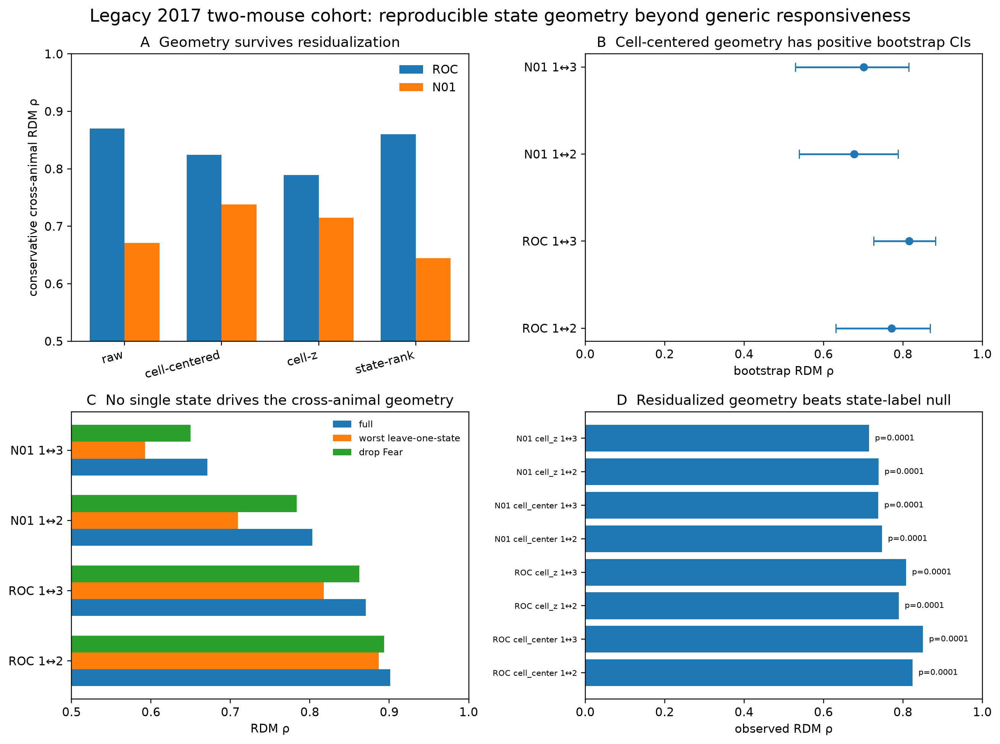

Legacy 2017 cohort
Two real animals show reproducible state geometry beyond generic cellular responsiveness.
The legacy matrix resolves to ANM378231 plus ANM372321. The two ANM372321 source lineages are within-animal robustness units, never extra animals. Cross-animal geometry survives representation changes, cell-centering, cell-z normalization and deletion of each individual state.

Residualized geometry, bootstrap confidence intervals, leave-one-state robustness and exact state-label null tests. PDF
ANM378231
96 cells
Exact NID selection recovered. Raw ROC cross-animal geometry reaches ρ=0.901/0.870 versus the two ANM372321 lineages.
ANM372321
94 + 129 cells
Two source lineages from one real animal. They provide within-animal robustness and are never counted as two animals.
Residualized cross-animal result. After subtracting each cell's mean across all 11 states, ROC cross-animal ρ remains 0.824/0.851 and N01 remains 0.747/0.738. Exact state-label permutation remains significant.
Historical boundary. Original processing and lineage provenance are preserved, but the old daily raw movie mount is not currently available for a modern framewise residual-motion re-audit.